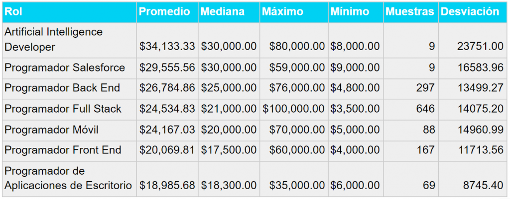

Salário de programadores em 2025
De acordo com a UOL, programadores estão tendo os salários muito aumentados, por causa da falta de programadores front-end e back-end, por causa disso tem muitas vagas de emprego como programador

Esses são os principais salários que os programadores estão tendo em 2025, por causa da falta de programadores, os salários dos programadores estão cada vez mais altos. Temos também os niveis de programadores classificados em: Júnior, Pleno e Sênior.
Júnior:
O salário de um programador júnior em 2025, é R$5.000,00.
Os Júniors são os programadores iniciantes que sabem
somente o básico, que conforme eles vão ganhando
experiências nos trabalhos eles evoluem de júnior para Pleno.
Pleno
O salário como um programador Pleno em 2025,é R$8.000,00.
Os júniors são como aqueles que acabaram de começar,
o Pleno é aquele que já tem uma certa experiêcia, porém ele
não é inexperiente e nem experiente, ele está como um
programador médio, que cada vez mais vai evoluindo até
chegar no Sênior.
Sênior
O salário de um programador Sênior em 2025, é R$16.000,00.
Os programadores Sênior são os mais experientes, já sabendo
tudo da programação, sendo um dos programadores mais
dificeis de se achar, pois eles normalmente gostam de criar os
seus próprios sites, e por causa disso hoje em dia está cada vez
mais dificil de achar um programador Sênior.
Minha experiência sendo um programador Júnior
Minha experiência sendo um Júnior, ainda é pouca pois estou começando agora na programação, terminei meu curso e vim fazer um site bem elaborado, mas bem simples. Estou contando isto pois mais para o futuro vou revisitar este site e vou relembrar de tudo que passei para cria-lo, há muito tempo quero ser um programador, pois eu vi que eles ganham bastante, mesmo sendo inexperiente, eu estou muito feliz pro criar minha primeira página como Júnior na programação, espero aprender mais, para, quem sabe um dia eu ser um programador Sênior.
O que eu posso falar para aqueles que querem começar na programação?
Eu posso falar para essas pessoas que estão querendo começar na programação, é que essa é uma ótima escolha a se fazer porque, além de ganhar muito apenas escrevendo códigos minúsculo(as vezes), então todos aqueles que começarem na programação, espero que tenham sucesso até porque a programação não é nenhum pouco fácil, pois ela consiste em ter muitos códigos, muitas pessoas acham que é só escrever, e pronto acontece uma mágica, que do nada aparece botões, barras de pesquisas, logos, imagens, mas não é assim pois precisa passar por dores de cabeça para entender o que as vezes você fez de errado, e isso tudo eu falo somente sabendo front-end, então para as pessoas que estão começando eu desejo uma boa sorte.
O que é front-end?
O front-end é uma parte do programa que é tudo o que você vê, que no caso é front que significa frente, essas coisas que eu estou escrevendo, isso tudo é front-end, porque vocês conseguem ler, mas o processo é muito mais longo tendo que envolver duas linguagens de programação HTML e CSS.